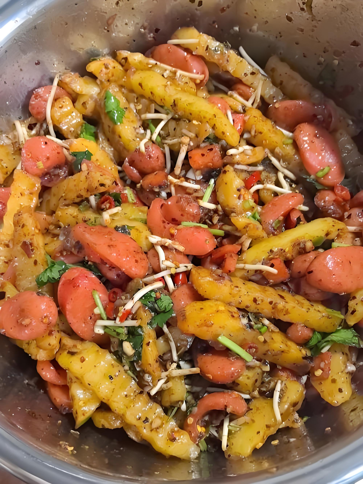
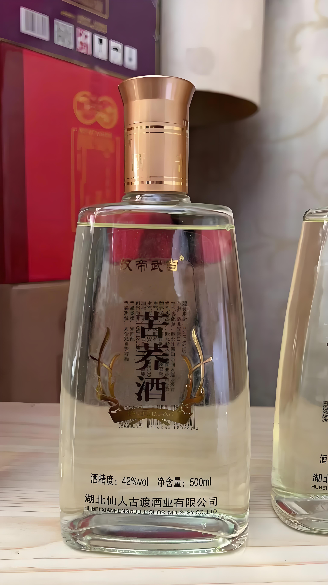

洞天福地，花海毕节
自然景观
世界最大天然花园
百里杜鹃风景区
世界最大的天然杜鹃花园，花期如海，烂漫云霞
世界最大天然花园
杜鹃花海
花期壮观
最佳游览时间：3-4月花期
百里杜鹃管理区
高原明珠
威宁草海
中国三大高原湖泊之一，候鸟栖息地，生态宝库
高原湖泊
候鸟栖息地
生态宝库
建议游览时间：半天-1天
威宁县草海镇
溶洞奇观
纳雍九洞天
大型溶洞群，洞中有洞，洞洞相连，奇观异景
大型溶洞群
洞洞相连
奇观异景
建议游览时间：2-3小时
纳雍县锅圈岩乡
贵州屋脊
韭菜坪
贵州最高峰，万亩韭菜花海，中国十大避暑名山
贵州屋脊
万亩花海
避暑胜地
最佳游览时间：8-9月花期
赫章县与威宁县交界处
人文风景
乌江风光
乌江百里画廊
乌江上游的壮丽峡谷风光，山水相连，景色宜人
峡谷风光
山水相连
景色宜人
建议游览时间：半天-1天
乌江上游毕节段
溶洞之王
织金洞
中国最美溶洞，洞内钟乳石千姿百态，景观壮丽
中国最美溶洞
钟乳石奇观
景观壮丽
建议游览时间：2-3小时
织金县城东北
美食推荐
特色糕点
威宁荞酥
威宁特产，酥脆香甜，营养丰富，历史悠久
酥脆香甜
营养丰富
威宁县各大特产店

特色主食
毕节洋芋
毕节特色主食，口感粉糯，可制作多种美食
口感粉糯
制作多样
毕节各地餐厅

特色酒类
威宁苦荞酒
威宁特产酒类，苦荞酿制，香味独特，营养丰富
香味独特
营养丰富
威宁县各大酒行
交通出行
如何到达
航空
毕节飞雄机场位于大方县，距离市区约30公里
铁路
织金站、六盘水站是主要火车站，连接贵阳等地
公路
毕节是贵州省西北部交通枢纽，多条高速公路交汇